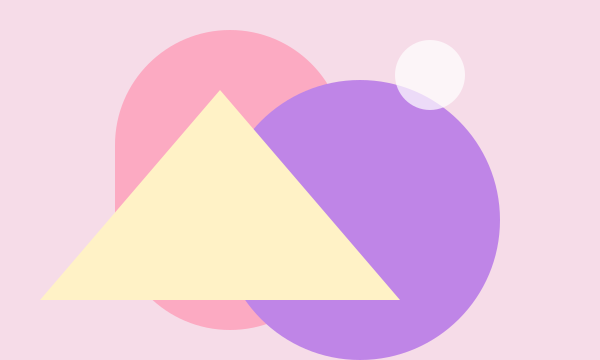

LR
Luna RiveraDiseño e ilustración
CREATORIdeas que empiezan en un cuaderno.
Conocer su espacio →CREADORES. IDEAS. CONEXIONES.
Descubre personas que comparten lo que hacen. Sigue sus procesos y explora una nueva forma de conectar a través de contenido y membresías.

Ideas que empiezan en un cuaderno.
Conocer su espacio →ENCUENTRA TU PRÓXIMA INSPIRACIÓN
Todos los perfiles y contenidos
son ejemplos de esta demostración.
No encontramos creadores con ese filtro.
TU PRÓXIMO PRODUCTO DIGITAL
Esta demo toma como referencia Fanely y la visión modular de CreatorHub. Podemos evaluar una plataforma propia de contenido y membresías, con el alcance adecuado para tu negocio.
Conversar con CIEM ↗Un lugar para tu contenidoPerfiles, publicaciones y organización por audiencias.
Una relación con tu comunidadSeguimiento, contenido guardado y membresías.
Un panel para gestionarBorradores, publicaciones y niveles de acceso.
Un alcance por definir contigoUsuarios, pagos e integraciones requieren desarrollo adicional.
TU ESPACIO COMO FAN
Explora publicaciones, sigue creadores y guarda tus favoritas.
ELIGE CÓMO CONECTAR
Prueba activar, cambiar de nivel o cancelar una membresía. Ninguna acción genera cobros o suscripciones reales.
Al cancelar en esta demo, el acceso simulado se desactiva inmediatamente. Esto no representa un ciclo de facturación real.
EXPERIENCIA DEL CREADOR · PANEL SIMULADO
Crea contenido de ejemplo y prueba cómo se muestra a tu comunidad.